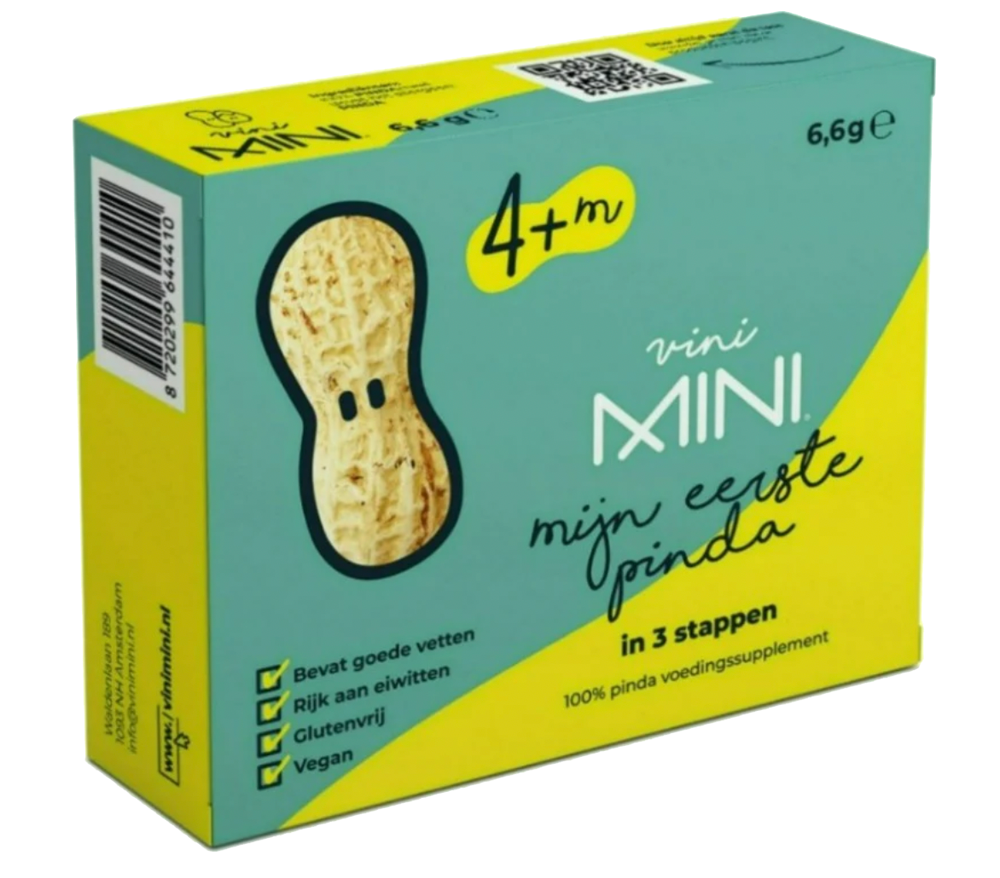

GEEN VERZENDKOSTEN bij aankoop van mijn eerste pinda in 3 of 6 stappen + mijn eerste pinda Opvolgkit

3-staps schema
Uit de test komt dat een 3-staps schema voor het geven van pinda het beste past bij jouw Mini.
Mijn eerste pinda in 3 stappen bevat 3 zakjes met de juiste dosering pindameel. Zo kun je veilig per
stap bekijken hoe jouw Mini reageert op het eten van pinda.
Het aantal kinderen met voedselallergie is in de afgelopen 10 jaar verdubbeld. Wetenschappelijk
onderzoek toont aan dat je de kans op een pinda- en ei-allergie vermindert door deze vroeg en
vaak te geven aan een Mini.
Zodra je Mini gewend is aan de eerste hapjes, kun je starten met pinda en ei. Gebruik voor de
eerste keer een schema en blijf vervolgens wekelijks pinda en ei geven. Je kunt hiervoor
pindakaas, gekookt ei of onze producten gebruiken.
Voor het geven van pinda of ei aan jouw Mini hebben wij een aantal handige tips en recepten opgesteld
waar je onze producten heel makkelijk aan zou kunnen toevoegen. Op deze manier zal jouw Mini veilig pinda of ei
binnen krijgen en het niet door hebben.